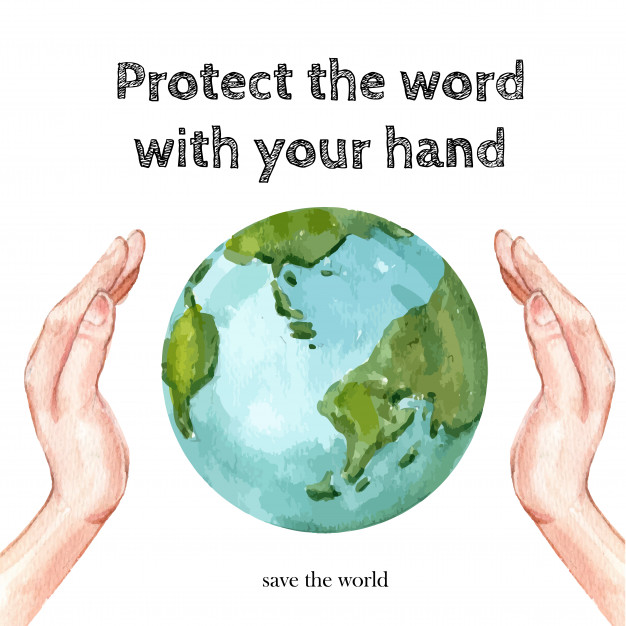
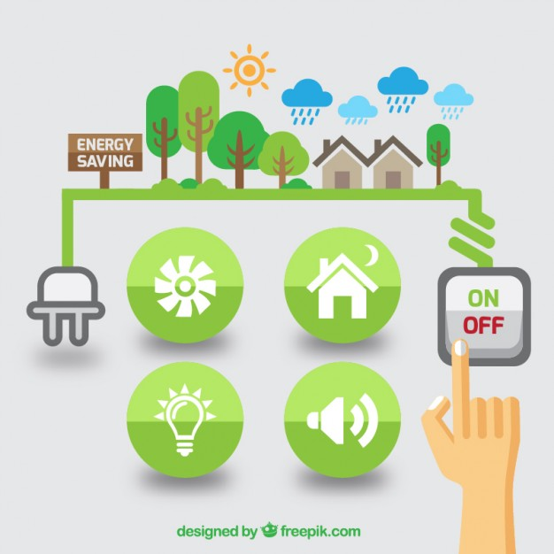
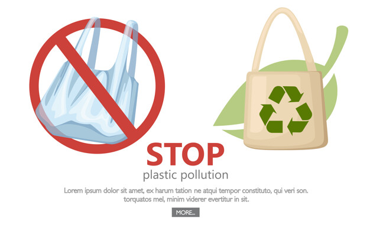
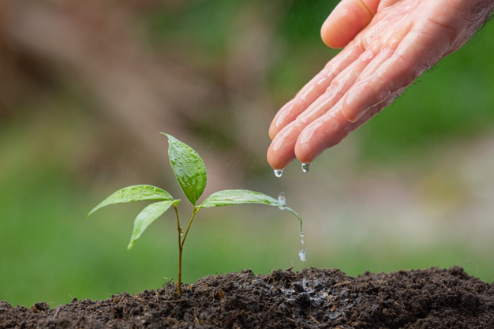

• ພວກເຮົາຈະຊ່ວຍກັນຢຸດຢັ້ງການປ່ຽນແປງສະພາບພູມອາກາດໄດ້ແນວໃດ?
ມາຮອດປັດຈຸບັນນີ້ຄົງຈະບໍ່ມີໃຜຄັດຄ້ານວ່າ ສາເຫດຫຼັກທີ່ເຮັດໃຫ້ການປ່ຽນແປງສະພາບພູມອາກາດແມ່ນ ປະລິມານກາສເຮືອນແກ້ວທີ່ເພີ່ມສູງຂຶ້ນ ດັ່ງນັ້ນ, ທາງດຽວທີ່ຈະແກ້ບັນຫາຕົ້ນເຫດ ຄື ການຫຼຸດປະລິມານກາສເຮືອນແກ້ວທີ່ປ່ອຍສູ່ຊັ້ນບັນຍາກາດນັ້ນເອງ, ແຕ່ຖ້າເຮົາຍັງບໍ່ຮູ້ເທື່ອວ່າເຮົາຄວນຈະເລີ່ມຈາກຫຍັງ ເຮົາກໍເລີ່ມຈາກຕົວເຮົາເອງເປັນອັນດັບທຳອິດ ໂດຍຍຶດຫຼັກການ “ເປັນມິດຕໍ່ສິ່ງແວດລ້ອມ” ເຊັ່ນ:
1. ປະຢັດພະລັງງານໄຟຟ້າ.
ປະຢັດພະລັງງານໄຟຟ້າ ເຊັ່ນ: ເລືອກໃຊ້ດອກໄຟທີ່ປະຢັດໄຟຟ້າ ແລະ ເລືອກໃຊ້ອຸປະກອນເຄື່ອງໃຊ້ໄຟຟ້າທີ່ມີສັນຍາລັກປະຢັດໄຟ, ປິດໄຟດອກທີ່ບໍ່ໄດ້ໃຊ້, ຖອດປັກສຽບເຄື່ອງໃຊ້ໄຟຟ້າທຸກຄັ້ງເມື່ອໃຊ້ງານມັນສຳເລັດ.
2. ປະຢັດນໍ້າມັນ.
ປະຢັດນໍ້າມັນ ເຊັ່ນ: ໃຊ້ລະບົບຂົນສົ່ງສາທາລະນະຫຼາຍຂຶ້ນ ກວດເຊັກສະພາບລົດ ແລະ ຄວາມພ້ອມຂອງລົດເປັນປະຈຳ, ວາງແຜນກ່ອນເດີນທາງ, ທາງດຽວກັນກໍຄວນຈະໄປນຳກັນ, ການເລືອກໃຊ້ລົດຖີບ ຫຼື ຍ່າງໃນໄລຍະທາງທີ່ບໍ່ໄກປານໃດ ກໍເປັນການຊ່ວຍໃນການຫຼຸດການໃຊ້ເຊື້ອໄຟເຊັ່ນດຽວກັນ.
3. ຫຼຸດການໃຊ້ພະລິດຕະພັນປລາສຕິກແບບທີ່ໃຊ້ໄດ້ພຽງຄັ້ງດຽວ.
ຫຼຸດການໃຊ້ພະລິດຕະພັນປລາສຕິກແບບທີ່ໃຊ້ໄດ້ພຽງຄັ້ງດຽວເຊັ່ນ: ຖົົງຢາງ, ຕຸກນໍ້າ, ຫຼອດດູດ ແລະອື່ນໆ ທີ່ຖືກໂຍນຖິ້ມຫຼັງຈາກໃຊ້ພຽງຄັ້ງດຽວ ໂດຍການຫັນມາໃຊ້ຖົງຜ້າແທນຖົງຢາງປລາສຕິກແບບໃຊ້ແລ້ວຖິ້ມ ຫຼື ຫັນມາໃຊ້ບັນຈຸພັນທີ່ເປັນວັດສະດຸຈາກທຳມະຊາດ ແລະ ການໃຊ້ປລາສຕິກ ທີ່ສາມາດນຳກັບມາໃຊ້ຊ້ຳໄດ້. ນອກຈາກນີ້, ການແຍກຂີ້ເຫຍື້ອກ່ອນຖິ້ມ ຍັງເຮັດໃຫ້ງ່າຍຕໍ່ການນຳໄປໝູນໃຊ້ຄືນໃໝ່ ແລະ ການກຳຈັດທີ່ເໝາະສົມ.
4. ປະຢັດນ້ໍາ.
ຄວນກວດສອບລະບົບນ້ໍາປະປາໃນເຮືອນບໍ່ໃຫ້ມີຈຸດຮົ່ວຊຶມໃຊ້ຝັກບົວອາບນ້ໍາແທນການໃຊ້ໂອຕັກອາບຈະຊ່ວຍໃຫ້ຫຼຸດປະລິມານນ້ຳທີ່ສູນເສຍໄດ້, ເລືອກໃຊ້ຈັກຊັກຜ້າແບບປະຢັດນ້ຳ ແລະ ຄວນຊັກເຄື່ອງຄັ້ງລະຫຼາຍໆຕົວພ້ອມກັນ. ນອກຈາກນີ້, ການນຳນ້ໍາທີ່ເຫຼືອໃຊ້ຈາກກິດຈະກຳອື່ນໆ ມາຫົດນ້ຳຕົ້ນໄມ້ ກໍຈະຊ່ວຍໃຫ້ປະຢັດນ້ຳ ແລະ ເປັນການຊ່ວຍຫຼຸດ ການຈ່າຍຄ່ານ້ຳອີກດ້ວຍ.
5. ເພີ່ມພື້ນທີ່ສີຂຽວ.
ເພີ່ມພື້ນທີ່ສີຂຽວ ໂດຍການປູກຕົ້ນໄມ້ໃຫຍ່ເພີ່ມ ນອກຈາກຈະຊ່ວຍຫຼຸດຄວາມຮ້ອນແລ້ວ ຍັງຊ່ວຍດູດຊັບກາສຄາບອນໄດອອກໄຊ ເຊິ່ງເປັນໜຶ່ງໃນການກໍ່ໃຫ້ເກີດກາສເຮືອນແກ້ວຕົວສຳຄັນທີ່ເປັນສາເຫດກໍ່ໃຫ້ເກີດພາວະໂລກຮ້ອນ ແລະ ການປ່ຽນແປງຂອງສະພາບພູມອາກາດອີກດ້ວຍ, ງານວິໄຈທີ່ໄດ້ຮັບການຕີພິມໃນວາລະສານ Science ກ່າວວ່າ ໂລກເຮົາຕ້ອງການຕົ້ນໄມ້ອີກປະມານ 5ແສນລ້ານຕົ້ນ ເພື່ອດູດກາສຄາບອນໄດອອກໄຊໃນຊັ້ນບັນຍາກາດ ແລະ ໂລກເຮົາຍັງມີພື້ນທີ່ພຽງພໍສຳລັບການປູກປ່າໃໝ່ໃນຈຳນວນທີ່ກ່າວ.
ຂໍຂອບໃຈເອກະສານອ້າງອີງ ແລະ ຮູບຈາກ:
- https://greennews.agency- https://www.greenpeace.org
- https://www.seub.or.th
- https://lifestyle.socialgiver.com
- https://www.reanrooclimatechange.com
- https://www.freepik.com
- https://undraw.co
- https://climate-science.com
- https://today.line.me/th/v2/
- https://www.greenpeace.org/thailand/